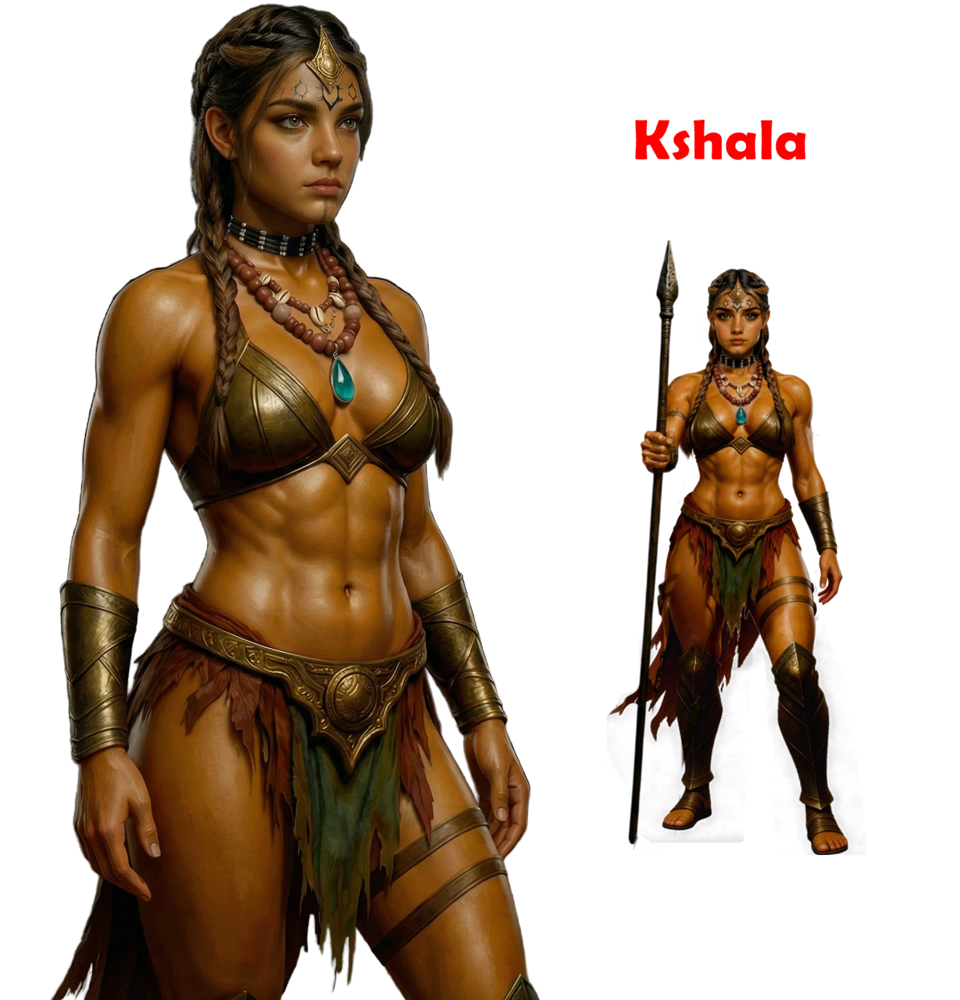
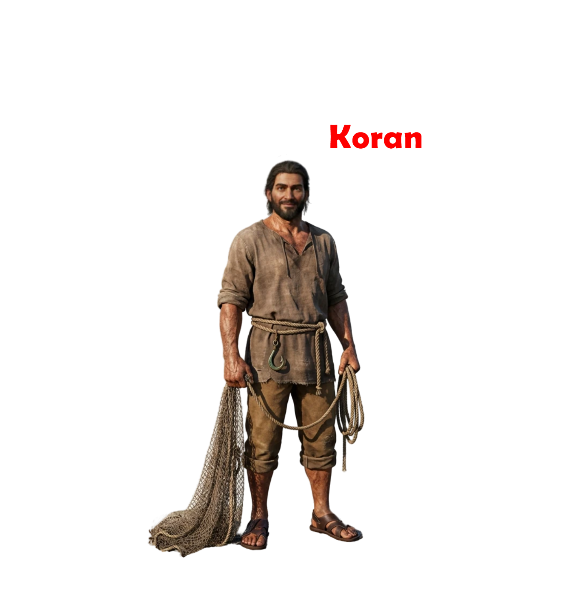

An original South-Indian myth-inspired action drama, visualized through finished animatics to prove tone, scale, and feasibility before production.
Set in ancient South India, marked by fragmented power and ongoing conflict, the story follows two individuals who find common ground against a brutal enemy. Their alliance grows by choice, with emotion and trust developing through action and shared struggle.







Keeper of Lore & Architect of Ancestral Worlds
In the twilight between myth and memory, Anandan shapes claimed worlds where spirits whispered and forgotten kings breathe again. Trained in the arcane craft of 2D and 3D animation, he moves characters until the precision of a sculptor guides destiny.
His knowledge reaches deep into Astronomy, Astrology, and the ancient tribal belief systems that connect the stars to the soul. These cosmic and ancestral networks flow directly into The Karma Universe — guiding his creation of the Yaali Myth, Winged Warriors, and stone-hearted Empires.
A devoted worldbuilder, he merges South Indian Tribal Heritage, Warrior Traditions, Mystic Philosophy, and Dravidian-era landscapes to forge universes that feel carved from time itself.
Beyond storytelling, Anandan writes Tamil Poetry. Using verses echoing with emotion and memory, his compositions are brought to life through AI-enhanced music, now released across all major platforms — YouTube, Spotify, Apple Music, and more — carrying whispered wisdom through hip-hop sound.
Obsessed with patterns of fate and legacy, Anandan chases knowledge like a warrior hunts destiny, creating stories where fear transforms into power... and Karma returns with wings.